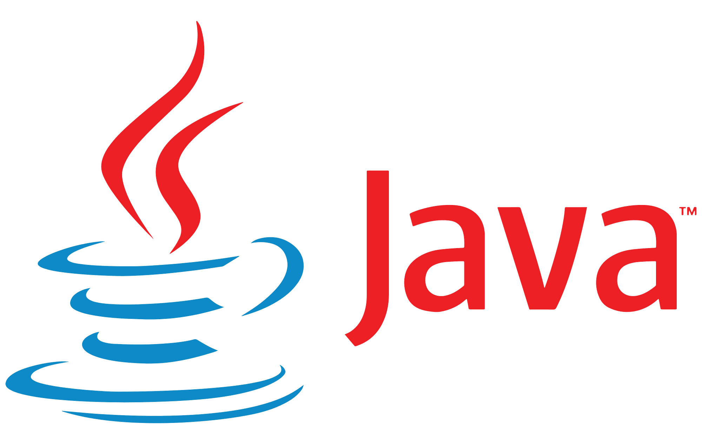
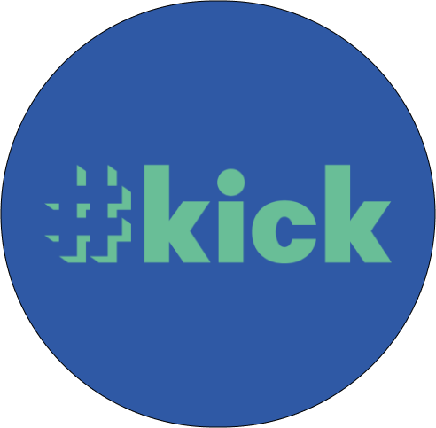
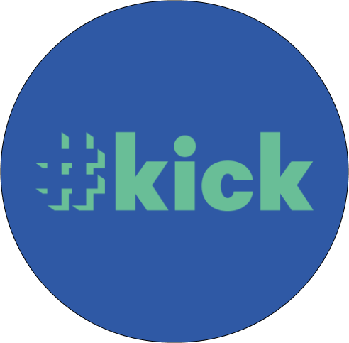

Aqui contarei um pouco sobre mim e sobre meu momento atual...
Meu nome é Leonardo tenho 29 anos moro em São Carlos SP e
atualmente curso Análise e desenvolvimento de sistemas. Ao longo
de três semestres na faculdade aprendi o basico de muita coisa,
sem julgamentos, fundamentos são necessários kkkk. Aprendi um
pouco sobre, logica de programação, Java, MySQL. Conceitos como
modelagem de sistemas, engenharia de software, qualidade de
software, infraestrutura. Em resumo eu adoro a área, acredito que
os desafios que ela nos traz faz com que a gente exija cada vez
mais de nós mesmos.



 
